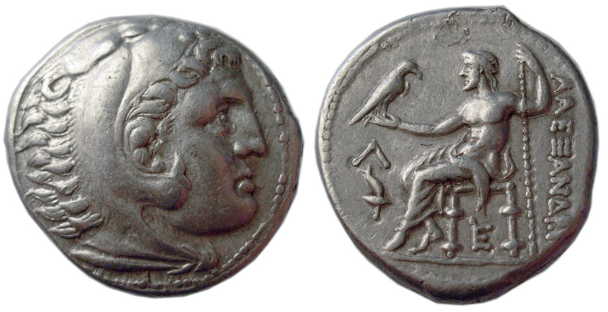

Alexander the Great Tetradrachm

- Find Name
- Alexander the Great Tetradrachm
- Description
- A silver tetradrachm of Alexander III of Macedon, about 17 grams: the obverse shows Heracles in a lion skin (on lifetime issues) or the deified Alexander wearing the horn of Ammon (on posthumous Lysimachus-type issues), the reverse Zeus enthroned holding an eagle. Alexander's coinage circulated across the empire he conquered in a decade and was copied by his successors for generations, spreading Greek language and culture — the world in which the New Testament would later be written.
- Historical Period
- Hellenistic
- Evidence Class
- Contextual
- Interpretations
- The identification of Daniel 8's goat and horn with Greece and Alexander is the standard historical reading, shared across conservative and critical scholarship; debate concerns the date of Daniel's composition, not the identity of the figure. No claim is made that Daniel saw this coin type, which postdates the vision's setting.
- Alternative Names
- Tetradrachm of Alexander III
- Related Books
- Related People
- Scripture Illuminated
- Biblical Significance
- Daniel 8 pictures Greece as a he-goat from the west whose 'notable horn' charges the Medo-Persian ram, and the interpretation is explicit: 'the rough goat is the king of Grecia: and the great horn that is between his eyes is the first king.' The great horn is Alexander; the horn broken at its height (Daniel 8:8) is his death at thirty-two, and the four horns that replace it are the four kingdoms of his successors. The tetradrachm is the face of that horn.
- Artifact Date
- 336-323 BC (lifetime issues); posthumous issues into the 3rd century BC
- Current Location
- Examples in many museum collections, including the Art Institute of Chicago
- Timeline Era
- Return and Second Temple
Awaiting Review Not yet checked against scholarly sources. Treat its claims as provisional until this entry is reviewed. About verification
Last reviewed: not yet reviewed